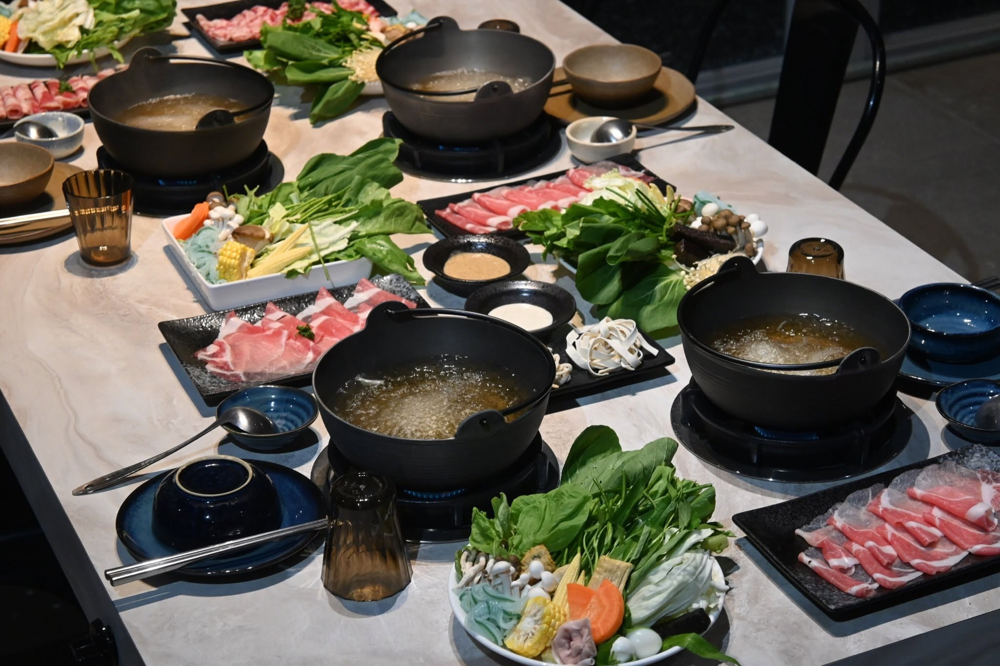

游山谷露
ABURA GULU
隱於南澳碧候深處的山谷，在翠綠環抱中感受四季的呼吸。
聽溪流與風的對話，讓私湯的暖意洗去日常的喧囂。
於山水之間悠然落腳，開啟一場隨心所欲的野奢旅程。
位於宜蘭南澳碧候山谷，距碧候溫泉車程 5 分鐘內。

隱於南澳碧候深處的山谷，在翠綠環抱中感受四季的呼吸。
聽溪流與風的對話，讓私湯的暖意洗去日常的喧囂。
於山水之間悠然落腳，開啟一場隨心所欲的野奢旅程。
位於宜蘭南澳碧候山谷，距碧候溫泉車程 5 分鐘內。




旗艦奢選開放寵物友善房（寵物房數量有限），每房最多 2 隻，提供寵物床墊與餐碗。
寵物入住規範游山谷露位於宜蘭縣南澳鄉金岳村金岳路190號（碧候休閒農場內），在南澳碧候山谷裡，距碧候溫泉車程 5 分鐘內。開車可經國道 5 號、蘇花改到南澳，轉金岳路即可抵達；搭火車可到南澳車站。 碧候周邊攻略 →
游山谷露的住宿是森林露營車，每間都有獨立客廳與獨立衛浴，不用自己搭帳篷。旗艦奢選附私人湯屋；森之初探分為露營車附浴缸、無浴缸兩種房型。園區另有戶外大眾暖湯池，所有住客都可以使用。 森林露營車 →
住宿含一泊三食：入住當天的山林感官下午茶、晚間的職人地誌鍋物，以及隔天早上的森林朝露早餐，三餐都在園區餐廳享用。 一泊三食 →
可以。旗艦奢選開放寵物友善房（寵物房數量有限），每房最多 2 隻，15 公斤以上大型犬限 1 隻。訂房時把房間加入購物車後，在購物車加選寵物即可；清潔費、押金與入住規範請見寵物入住頁。 寵物入住規範 →
入住時間為 14:30 起，退房時間為隔天 11:30 前。
可以。不住宿的客人可以預約日歸方案：日歸湯屋、職人地誌鍋物、山林感官下午茶，非住客皆採預約制，請在訂房網站的日歸方案頁面先預約。 日歸方案預約 →
可以直接在官網線上訂房，即時查詢空房。入住前 30 天以上預訂享早鳥價（春節等特殊節日不適用）；訂金為房價的 30%（入住期間遇到 3 天以上連續假日為 50%），尾款於入住當天結清。實際金額以訂房網站顯示為準。 線上訂房 →